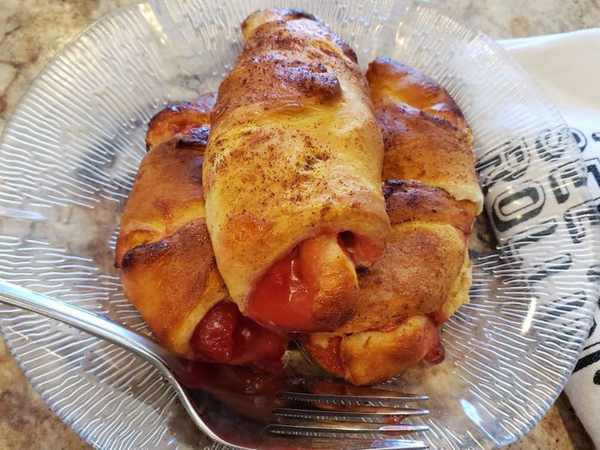

Lightly dust a work surface with flour.
Unroll crescent dough and divide into triangles along the perforated lines.
Spread each triangle with cream cheese.
Drop 3 or 4 cherries on the wider portion of each crescent dough triangle.
Carefully roll up each crescent, making sure the cherries stay tucked in.
Fold down the ends of each roll slightly so it forms a crescent shape.
Spray the basket of the air fryer with non stick cooking spray spray.
Carefully set the croissants into the basket.
Set air fryer to 400 degrees F (200 degrees C).
Air fry croissants until puffed up and lightly browned, about 5 minutes.
Check to make sure croissants are not sticking to each other and that they are not overly browned.
Continue cooking for 2 to 3 minutes longer, making sure they do not get too done.
Transfer croissants to a plate and sprinkle with cinnamon.